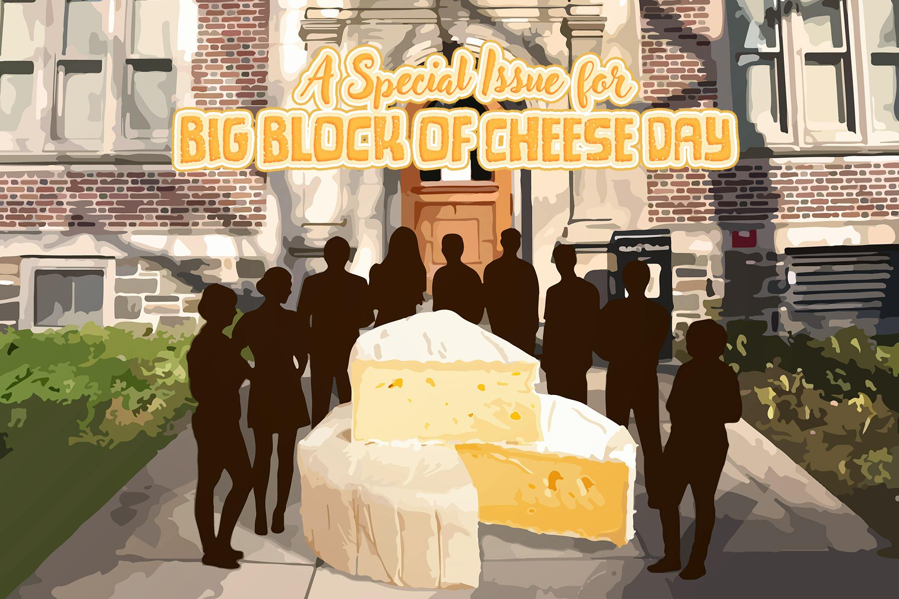
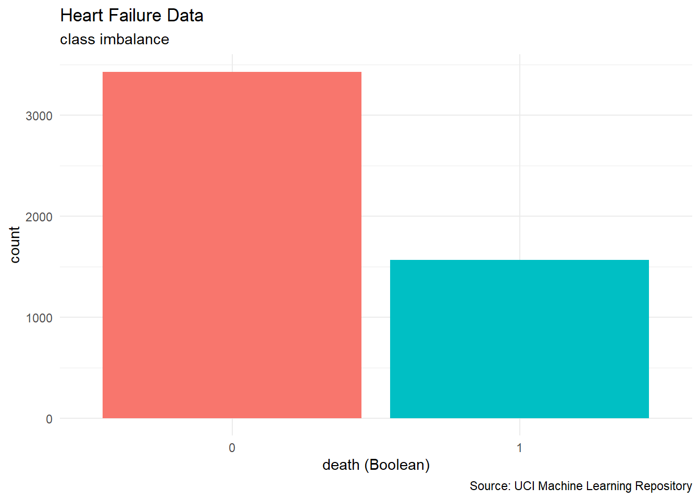

library("corrplot")
library("effectsize")
library("gt")
library("janitor")
library("tidyclust")
library("tidymodels")
library("tidyverse")
# school colors
princeton_orange <- "#E77500"
princeton_black <- "#121212"
heart_df <- readr::read_csv("heart_failure_clinical_records.csv") |>
janitor::clean_names()
# user-defined function
cor2text <- function(x,y, num_digits = 4){
# This function will compute a correlation, round the result, and describe the results
# INPUTS:
## x: numerical vector
## y: numerical vector
## num_digits: number of digits for rounding (default: 4)
# OUTPUT: string
r = cor(x,y, use = "pairwise.complete.obs")
cor_des <- case_when(
r >= 0.7 ~ "strongly and positively correlated",
r >= 0.4 & r < 0.7 ~ "slightly and positively correlated",
r <= -0.4 & r > -0.7 ~ "slightly and negatively correlated",
r <= -0.7 ~ "strongly and negatively correlated",
.default = "virtually uncorrelated"
)
#return
paste0("r = ", round(r, num_digits),
", ", cor_des)
}SML 201
Start
Goal: Move beyond p-values
Objectives:
tidymodelslogistic regression- correlation tests
- effect size
- power analyses

- image source: Daily Princetonian
NoteLibraries and Loading the Data
TipAbstract
“This dataset contains the medical records of 5000 patients who had heart failure, collected during their follow-up period, where each patient profile has 13 clinical features.”
NoteData Dictionary
- age: age of the patient (years)
- anaemia: decrease of red blood cells or hemoglobin (Boolean)
- creatinine phosphokinase (CPK): level of the CPK enzyme in the blood (mcg/L)
- diabetes: if the patient has diabetes (Boolean)
- ejection fraction: percentage of blood leaving the heart at each contraction (percentage)
- high blood pressure: if the patient has hypertension (Boolean)
- platelets: platelets in the blood (kiloplatelets/mL)
- sex: woman or man (binary)
- serum creatinine: level of serum creatinine in the blood (mg/dL)
- serum sodium: level of serum sodium in the blood (mEq/L)
- smoking: if the patient smokes or not (Boolean)
- time: follow-up period (days)
- death: if the patient died during the follow-up period (Boolean)
WarningSource
This data set was from the classic UC Irvine Machine Learning repository. At the time of this writing (2026-04-11), that repository was down, so the data and the documentation above were provided by Aadarsh Velu
Logistic Regression
Wrangling
heart_df <- heart_df |>
mutate(death = factor(death), #turn into categorical variable
sex = ifelse(sex == "F", 0, 1))Response Variable
From the explanatory variables, we are trying to find patterns in the data relating to the death of patients.

heart_df |>
ggplot(aes(x = death, fill = death)) +
geom_bar(stat = "count") +
labs(title = "Heart Failure Data",
subtitle = "class imbalance",
caption = "Source: UCI Machine Learning Repository",
x = "death (Boolean)") +
theme_minimal() +
theme(legend.position = "none")Baseline Metric
heart_df |>
tabyl(death) |>
adorn_totals("row") |>
adorn_pct_formatting() death n percent
0 3432 68.6%
1 1568 31.4%
Total 5000 100.0%Our classification models need to exceed 68.6 percent in accuracy.
Preprocessing
ridge_recipe <- recipe(death ~ ., data = heart_df) |>
step_novel(all_nominal_predictors()) |>
step_dummy(all_nominal_predictors()) |>
step_zv(all_predictors()) |>
step_normalize(all_predictors())Data Split
To help generalize our processes, we split the data into training and testing sets.
set.seed(201)
heart_split <- initial_split(heart_df, strata = "death")
heart_train <- training(heart_split)
heart_test <- testing(heart_split)
heart_fold <- vfold_cv(heart_train, v = 10)Baseline Model
ridge_fit <- logistic_reg(mixture = 0, penalty = 0) |>
set_engine("glmnet") |>
fit(death ~ ., data = heart_train)
tidy(ridge_fit)
Attaching package: 'Matrix'The following objects are masked from 'package:tidyr':
expand, pack, unpackLoaded glmnet 4.1-10# A tibble: 13 × 3
term estimate penalty
<chr> <dbl> <dbl>
1 (Intercept) 8.97 0
2 age 0.0348 0
3 anaemia 0.104 0
4 creatinine_phosphokinase 0.000218 0
5 diabetes -0.0411 0
6 ejection_fraction -0.0572 0
7 high_blood_pressure 0.185 0
8 platelets -0.000000549 0
9 serum_creatinine 0.489 0
10 serum_sodium -0.0650 0
11 sex 0.0146 0
12 smoking 0.0265 0
13 time -0.0150 0Grid Search
Ridge regression penalizes model coefficients that may weight some variables too much more so than others.
# mixture = 0 for ridge regression
ridge_spec <- logistic_reg(mixture = 0, penalty = tune()) |>
set_engine("glmnet")
ridge_workflow <- workflow() |>
add_recipe(ridge_recipe) |>
add_model(ridge_spec)
lambda_grid <- grid_regular(penalty(range = c(-3, 3)),
levels = 25)We train the models on the training data and perform a grid search to find an optimal value for the penalization hyperparameter.
ridge_grid <- tune_grid(
ridge_workflow,
resamples = heart_fold,
grid = lambda_grid
)
best_penalty <- select_best(ridge_grid, metric = "accuracy") |>
pull(penalty)Evaluation
Finally, we evaluate our model with a metric (such as accuracy for a classification task) on the test data
predictions <- predict(ridge_fit,
new_data = heart_test,
penalty = best_penalty)
true_values <- heart_test |> select(death)
# accuracy
mean(true_values == predictions)[1] 0.848
WarningDCP1
LASSO Regression
Baseline Model
lasso_fit <- logistic_reg(mixture = 1, penalty = 0) |>
set_engine("glmnet") |>
fit(death ~ ., data = heart_train)
lasso_recipe <- recipe(death ~ ., data = heart_df) |>
step_novel(all_nominal_predictors()) |>
step_dummy(all_nominal_predictors()) |>
step_zv(all_predictors()) |>
step_normalize(all_predictors())
lasso_spec <- logistic_reg(mixture = 1, penalty = tune()) |>
set_engine("glmnet")Grid Search
Ridge regression penalizes model coefficients that may weight some variables too much more so than others.
# mixture = 1 for LASSO regression
lasso_spec <- logistic_reg(mixture = 1, penalty = tune()) |>
set_engine("glmnet")
lasso_workflow <- workflow() |>
add_recipe(lasso_recipe) |>
add_model(lasso_spec)
lambda_grid <- grid_regular(penalty(range = c(-3, 3)),
levels = 25)We train the models on the training data and perform a grid search to find an optimal value for the penalization hyperparameter.
lasso_grid <- tune_grid(
lasso_workflow,
resamples = heart_fold,
grid = lambda_grid
)
best_penalty <- select_best(lasso_grid, metric = "accuracy") |>
pull(penalty)Evaluation
Finally, we evaluate our model with a metric (such as accuracy for a classification task) on the test data
predictions <- predict(lasso_fit,
new_data = heart_test,
penalty = best_penalty)
true_values <- heart_test |> select(death)
# accuracy
mean(true_values == predictions)[1] 0.864Discovered Model
| Heart Failure Data | |
| Possible Explanatory Varibles | |
| term | estimate |
|---|---|
| (Intercept) | 4.960394 |
| serum_creatinine | 0.363786 |
| ejection_fraction | −0.044967 |
| serum_sodium | −0.030325 |
| age | 0.019915 |
| time | −0.014666 |
| creatinine_phosphokinase | 0.000020 |
| anaemia | 0.000000 |
| diabetes | 0.000000 |
| high_blood_pressure | 0.000000 |
| platelets | 0.000000 |
| sex | 0.000000 |
| smoking | 0.000000 |
| Source: UCI Machine Learning Repository | |
tidy(lasso_fit, penalty = best_penalty) |>
select(term, estimate) |>
arrange(desc(abs(estimate))) |>
gt() |>
cols_align(align = "right") |>
fmt_number(decimals = 6) |>
tab_footnote(footnote = "Source: UCI Machine Learning Repository") |>
tab_header(
title = "Heart Failure Data",
subtitle = "Possible Explanatory Varibles"
) |>
tab_style(
style = cell_text(weight = "bold"),
locations = cells_column_labels()
) |>
tab_style(
style = list(
cell_fill(color = "#E77500"),
cell_text(weight = "bold")),
locations = cells_body(rows = abs(estimate) > 1e-6)
)
WarningDCP2
Correlation Tests
Hypothesis Tests
- null hypothesis: correlation is zero
- alternative hypothesis: we may have some evidence of a linear relationship
\[\begin{array}{rrcl} H_{0}: & r & = & 0 \\ H_{a}: & r & \neq & 0 \\ \end{array}\]
Not Significant
cor(heart_df$creatinine_phosphokinase,
heart_df$serum_sodium,
use = "pairwise.complete.obs")[1] 0.05140368cor.test(heart_df$creatinine_phosphokinase,
heart_df$serum_sodium)
Pearson's product-moment correlation
data: heart_df$creatinine_phosphokinase and heart_df$serum_sodium
t = 3.6389, df = 4998, p-value = 0.0002766
alternative hypothesis: true correlation is not equal to 0
95 percent confidence interval:
0.02371819 0.07901040
sample estimates:
cor
0.05140368
Warninginterpretation
Since the p-value is greater than 0.05, we fail to reject the null hypothesis that there is zero correlation between creatinine phosphokinase and serum sodium (at the \(\alpha = 0.05\) significance level).
Significant
cor(heart_df$serum_creatinine,
heart_df$serum_sodium,
use = "pairwise.complete.obs")[1] -0.229683cor.test(heart_df$serum_creatinine,
heart_df$serum_sodium)
Pearson's product-moment correlation
data: heart_df$serum_creatinine and heart_df$serum_sodium
t = -16.684, df = 4998, p-value < 2.2e-16
alternative hypothesis: true correlation is not equal to 0
95 percent confidence interval:
-0.2557739 -0.2032578
sample estimates:
cor
-0.229683
Tipinterpretation
Since the p-value is less than 0.05, we reject the null hypothesis that there is zero correlation between serum creatinine and serum sodium (at the \(\alpha = 0.05\) significance level).
We may have found some evidence of a linear relationship between serum creatinine and serum sodium measurements.
WarningDCP3
Effect Sizes
Cohens h
Cohen’s h is a measure of distance between two proportions
\[h = |2\text{arcsin}\sqrt{p_{1}} - 2\text{arcsin}\sqrt{p_{2}}|\]
suggested interpretation:
- \(h = 0.20\): “small effect size”
- \(h = 0.50\): “medium effect size”
- \(h = 0.80\): “large effect size”
Cohen’s d
\[d = \frac{\bar{x}_{1} - \bar{x}_{2}}{s_\text{pooled}}\]
with pooled standard deviation
\[s = \sqrt{ \frac{(n_{1} - 1)s_{1}^{2} + (n_{2} - 1)s_{2}^{2}}{n_{1} + n_{2} - 2} }\]
suggested interpretation:
- \(d = 0.20\): “small effect size”
- \(d = 0.50\): “medium effect size”
- \(d = 0.80\): “large effect size”
effectsize::cohens_d(platelets ~ death, data = heart_df)Cohen's d | 95% CI
------------------------
0.07 | [0.01, 0.13]
- Estimated using pooled SD.effectsize::cohens_d(serum_creatinine ~ death, data = heart_df)Cohen's d | 95% CI
--------------------------
-0.71 | [-0.77, -0.64]
- Estimated using pooled SD.Power Analyses
Type I and Type II
- Type I errors: false positive
- Type II errors: false negative
NotePower
The power of a NHST (null hypothesis significance test) is the probability of correctly rejecting a false null hypothesis.
\[\text{power} = 1 - \beta\]
where \(\beta\) is the Type II error rate.
Measuring Power
mean_0 <- heart_df |>
filter(death == 0) |>
summarize(xbar = mean(serum_creatinine, na.rm = TRUE)) |>
unlist()
mean_1 <- heart_df |>
filter(death == 1) |>
summarize(xbar = mean(serum_creatinine, na.rm = TRUE)) |>
unlist()
diff_in_means = mean_1 - mean_0
pooled_sd <- effectsize::sd_pooled(
heart_df |> filter(death == 0) |> pull(serum_creatinine),
heart_df |> filter(death == 1) |> pull(serum_creatinine),
)power.t.test(
alternative = "one.sided",
delta = diff_in_means,
n = 1500, #group size
# power = ? #what we are trying to compute
sd = pooled_sd
)
Two-sample t test power calculation
n = 1500
delta = 0.6774028
sd = 0.9596794
sig.level = 0.05
power = 1
alternative = one.sided
NOTE: n is number in *each* groupSample Size
TipFinding Sample Size
We use a power analysis to compute a minimum sample size (for each group) needed to achieve
\[\begin{array}{rcll} \alpha & = & 0.05 & \text{significance level} \\ 1 - \beta & = & 0.80 & \text{power level} \\ \end{array}\]
power.t.test(
alternative = "one.sided",
delta = diff_in_means,
#n = ?, #what we are trying to find
power = 0.80,
sd = pooled_sd
)
Two-sample t test power calculation
n = 25.5217
delta = 0.6774028
sd = 0.9596794
sig.level = 0.05
power = 0.8
alternative = one.sided
NOTE: n is number in *each* group- This exploration should have at least \(n = 26\) in each group to try to meet these research goals.
Quo Vadimus?
- Precept 10
- Reading Week 11
- CLO Assessment (survey)
- Exam 2 (April 23)
- check location and other info in Canvas
- Project 3
- assigned: April 24
- due: May 11
- last-minute exam advice from 5 Second Films (YouTube)
Footnotes
Note(optional) Additional Resources
- correlograms by Antoine Soetewey
- correlation tests from Introductory Biostatistics with R by Dylan Z. Childs, Bethan J. Hindle and Philip H. Warren
- power analyses by simulation by Brandon LeBeau
NoteSession Info
sessionInfo()R version 4.5.2 (2025-10-31 ucrt)
Platform: x86_64-w64-mingw32/x64
Running under: Windows 10 x64 (build 19045)
Matrix products: default
LAPACK version 3.12.1
locale:
[1] LC_COLLATE=English_United States.utf8
[2] LC_CTYPE=English_United States.utf8
[3] LC_MONETARY=English_United States.utf8
[4] LC_NUMERIC=C
[5] LC_TIME=English_United States.utf8
time zone: America/New_York
tzcode source: internal
attached base packages:
[1] stats graphics grDevices utils datasets methods base
other attached packages:
[1] glmnet_4.1-10 Matrix_1.7-4 lubridate_1.9.4 forcats_1.0.0
[5] stringr_1.5.1 readr_2.1.5 tidyverse_2.0.0 yardstick_1.3.2
[9] workflowsets_1.1.1 workflows_1.2.0 tune_1.3.0 tidyr_1.3.1
[13] tibble_3.3.0 rsample_1.3.1 recipes_1.3.1 purrr_1.1.0
[17] parsnip_1.3.2 modeldata_1.5.0 infer_1.0.9 ggplot2_4.0.0
[21] dplyr_1.1.4 dials_1.4.1 scales_1.4.0 broom_1.0.9
[25] tidymodels_1.3.0 tidyclust_0.2.4 janitor_2.2.1 gt_1.0.0
[29] effectsize_1.0.1 corrplot_0.95
loaded via a namespace (and not attached):
[1] rlang_1.1.6 magrittr_2.0.3 snakecase_0.11.1
[4] furrr_0.3.1 compiler_4.5.2 vctrs_0.6.5
[7] lhs_1.2.0 shape_1.4.6.1 crayon_1.5.3
[10] pkgconfig_2.0.3 fastmap_1.2.0 backports_1.5.0
[13] labeling_0.4.3 utf8_1.2.6 rmarkdown_2.29
[16] prodlim_2025.04.28 tzdb_0.5.0 bit_4.6.0
[19] xfun_0.52 jsonlite_2.0.0 parallel_4.5.2
[22] R6_2.6.1 stringi_1.8.7 RColorBrewer_1.1-3
[25] parallelly_1.45.1 rpart_4.1.24 Rcpp_1.1.0
[28] iterators_1.0.14 knitr_1.50 future.apply_1.20.0
[31] parameters_0.27.0 splines_4.5.2 nnet_7.3-20
[34] timechange_0.3.0 tidyselect_1.2.1 rstudioapi_0.17.1
[37] yaml_2.3.10 timeDate_4041.110 codetools_0.2-20
[40] listenv_0.9.1 lattice_0.22-7 withr_3.0.2
[43] bayestestR_0.16.1 S7_0.2.0 evaluate_1.0.4
[46] future_1.67.0 survival_3.8-3 xml2_1.3.8
[49] pillar_1.11.0 foreach_1.5.2 insight_1.3.1
[52] generics_0.1.4 vroom_1.6.5 hms_1.1.3
[55] globals_0.18.0 class_7.3-23 glue_1.8.0
[58] tools_4.5.2 data.table_1.17.8 modelenv_0.2.0
[61] gower_1.0.2 grid_4.5.2 datawizard_1.2.0
[64] ipred_0.9-15 cli_3.6.5 DiceDesign_1.10
[67] lava_1.8.1 gtable_0.3.6 GPfit_1.0-9
[70] sass_0.4.10 digest_0.6.37 htmlwidgets_1.6.4
[73] farver_2.1.2 htmltools_0.5.8.1 lifecycle_1.0.4
[76] hardhat_1.4.1 sparsevctrs_0.3.4 bit64_4.6.0-1
[79] MASS_7.3-65